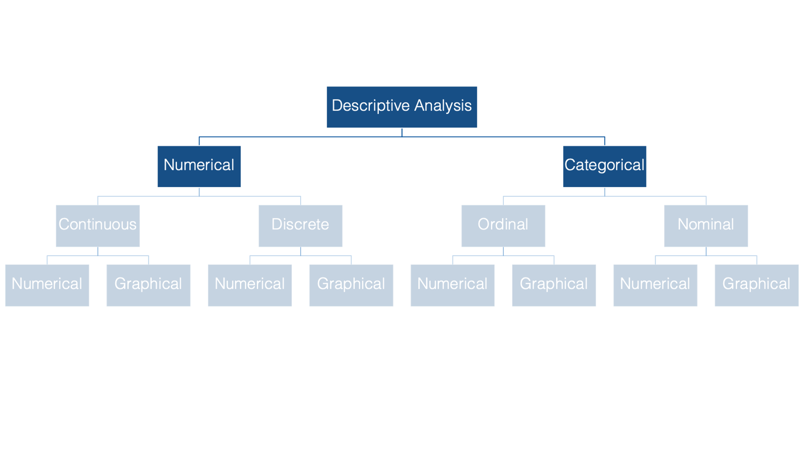

18 Introduction to descriptive analysis
18.1 What is descriptive analysis and why would we do it?
So, we have all this data that tells us all this information about different traits or characteristics of the people for whom the data was collected. For example, if we collected data about the students in this course, we may have information about how tall you are, about what kind of insurance you have, and about what your favorite color is.
| student_id | height_in | insurance | color |
|---|---|---|---|
| 1001 | 64.96 | private | blue |
| 1002 | 67.93 | other | yellow |
| 1003 | 84.03 | none | red |
But, unless you’re a celebrity, or under investigation for some reason, it’s unlikely that many people outside of your friends and family care to know any of this information about you, per se. Usually they want to know this information about the typical person in the population, or subpopulation, to which you belong. Or, they want to know more about the relationship between people who are like you in some way and some outcome that they are interested in.
For example: We typically aren’t interested in knowing that student 1002 (above) is 67.93 inches tall. We are typically more interested in knowing things like the average height of the class – 72.31.
Before we can make any inferences or draw any conclusions, we must (or at least should) begin by conducting descriptive analysis of our data. This is also sometimes referred to as exploratory analysis. There are at least three reasons why we want to start with a descriptive analysis:
- We can use descriptive analysis to uncover errors in our data.
- It helps us understand the distribution of values in our variables.
- Descriptive analysis serve as a starting point for understanding relationships between our variables.
18.2 What kind of descriptive analysis should we perform?
When conducting descriptive analysis, the method you choose will depend on the type of data you’re analyzing. At the most basic level, variables can be described as numerical or categorical.

Numeric variables can then be further divided into continuous and discrete - the distinction being whether the variable can take on a continuum of values, or only set of certain values.

Categorical variables can be subdivided into ordinal or nominal variables - depending on whether or not the categories can logically be ordered in a meaningful way.

Finally, for all types, and subtypes, of variables there are both numerical and graphical methods we can use for descriptive analysis.

In the exercises that follow you will be introduced to measures of frequency, measures of central tendency, and measures of dispersion. Then, you’ll learn various methods for estimating and interpreting these measures using R.